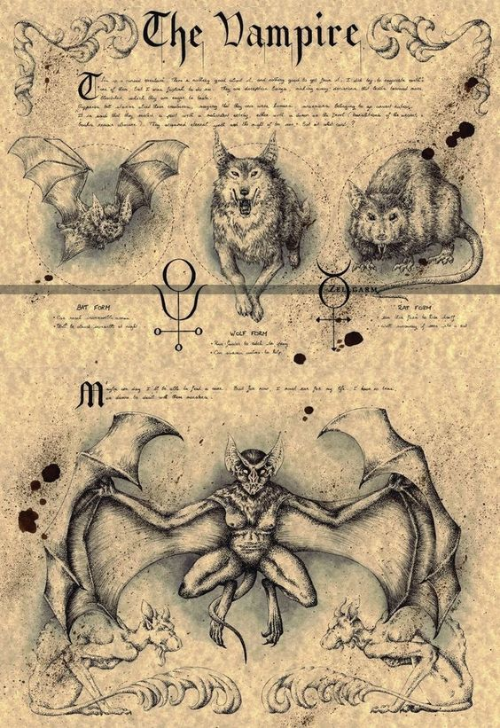

O termo entrou na língua portuguesa no século XVIII por via do francês vampire, que o tomou do alemão Vampir, que por sua vez o tomou emprestado no início do século XVIII do sérvio вампир/vampir, quando Arnold Paole, um suposto vampiro, foi descrito na Sérvia na época em que esse território estava incorporado no Império Austríaco. O Houaiss dá ainda como possível origem o húngaro, além do sérvio, apresentando como formas históricas vampire (c.1784), vampiro (1815) e vampyro (1857). Uma das primeiras ocorrências do termo registradas na língua portuguesa surge num texto português datado de 1784, em que é usada a forma vampire, indicando a sua proveniência directa do francês.Em regista-se já a forma actual, vampiro.
Vampiros são uma espécie amaldiçoada de mortos-vivos que existe na noite de Nörn. Desperto para uma noite interminável, os vampiros tem fome pela vida que perderam e saciam essa fome ao beber o sangue dos vivos. Os vampiros abominam a luz solar, pois seu toque os queima. Eles nunca projetam sombras ou reflexos e qualquer vampiro que deseje se mover sem ser notado entre os vivos, se mantem na escuridão e longe de superfícies reflexivas.
Sereias Wendigo Dragão